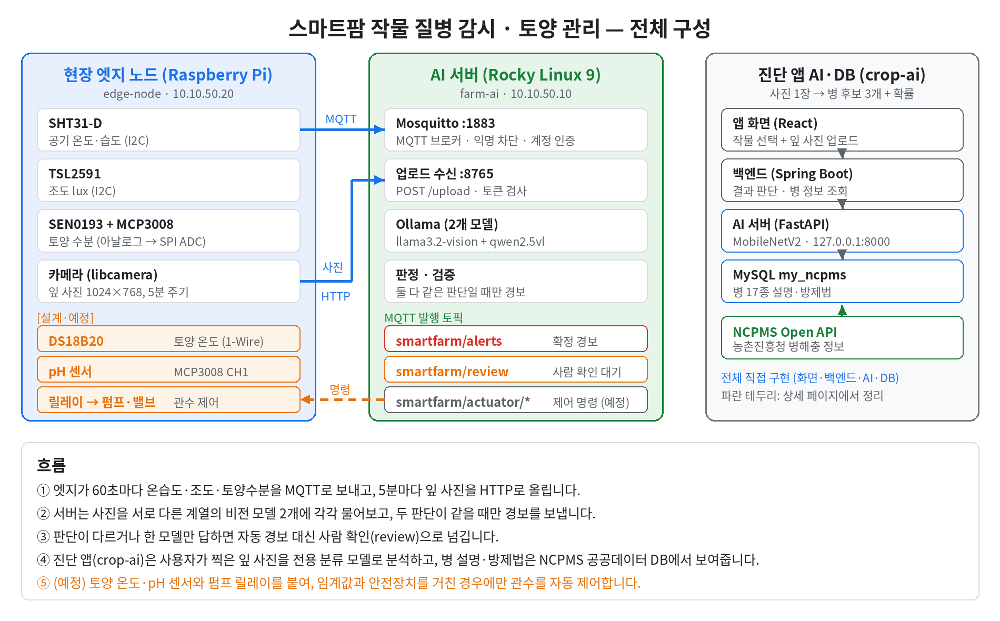
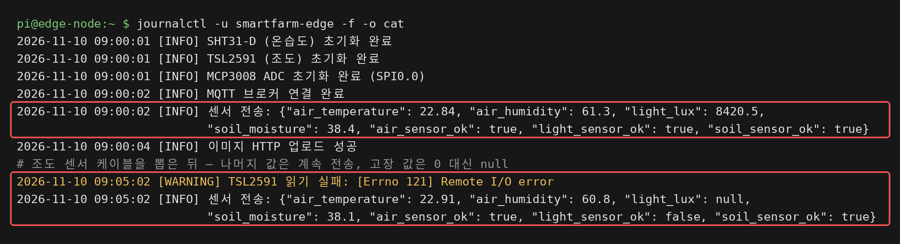
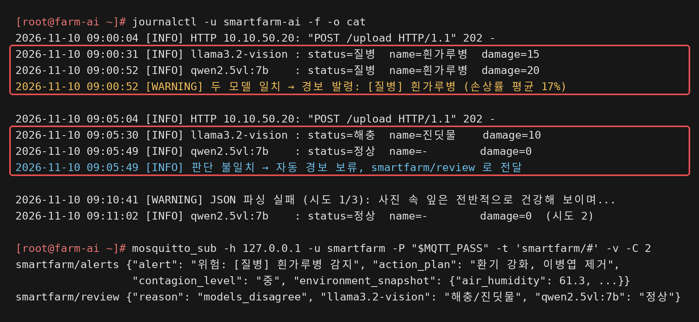
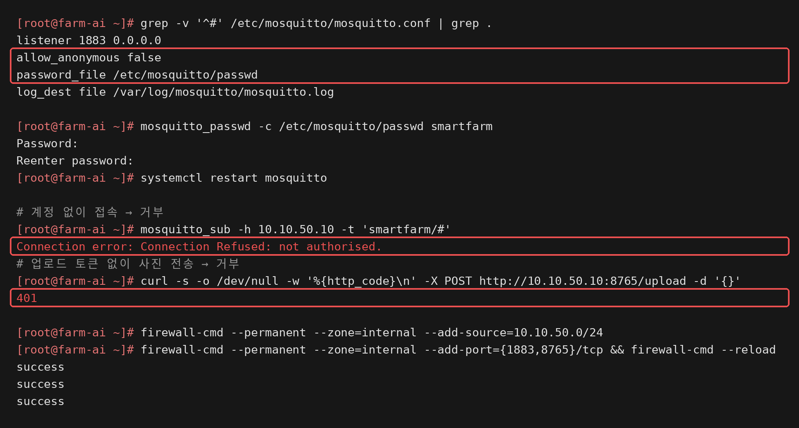
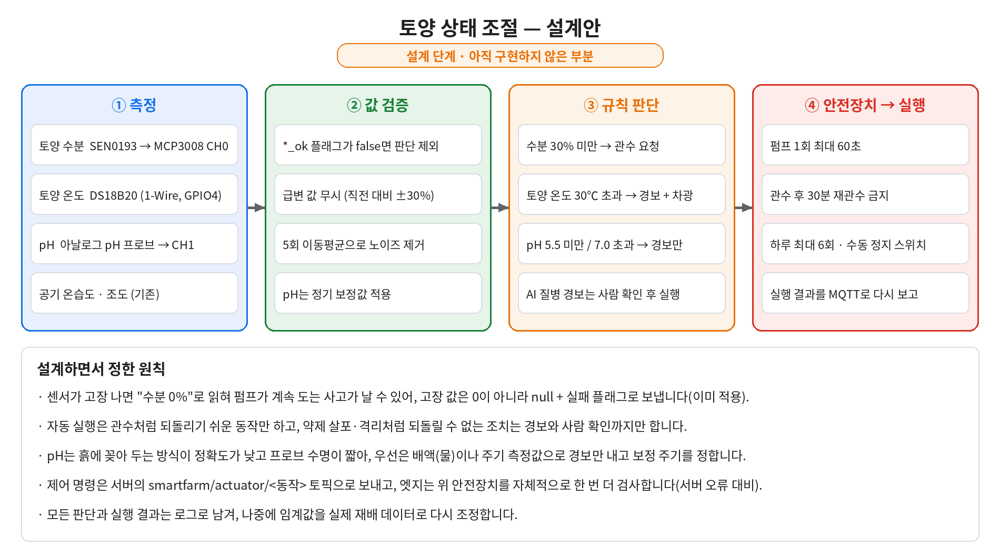

개인 프로젝트 · 진행 중
스마트팜 작물 질병 감시 · 토양 관리
개인 프로젝트진행 중
회사 업무와 별개로 진행하는 개인 프로젝트입니다. 재배 중인 작물의 잎 사진과 토양·환경 센서 값을 모아 질병을 일찍 알아채고, 토양 상태를 확인해 관수 등을 조절하는 것이 목표입니다. 인프라 운영자로서 신경 쓴 부분은 AI가 틀렸을 때 그 오판이 경보나 제어로 바로 이어지지 않게 하는 구조입니다.
IP·호스트명은 예시이며, 화면은 실제 구성을 바탕으로 다시 만든 예시입니다. 비밀번호·API 키·토큰은 모두 환경변수(.env)로 빼 두었고 이 페이지에는 싣지 않았습니다.
프로젝트 구성
| 구분 | 내용 | 상태 |
|---|---|---|
| 현장 감시 | 라즈베리 파이 센서·카메라 → MQTT·HTTP → AI 서버(Ollama 비전 모델 2개 앙상블) → 경보·사람 확인 | 구현 |
| 하위 프로젝트: 질병 진단 (crop-ai) | 잎 사진 1장 → 병 후보 3개 + 확률. React 화면, Spring Boot 백엔드(JWT), FastAPI 추론 서버, MobileNetV2 모델(검증 93.8%), NCPMS 공공데이터 병 정보 DB | 앱 완성실제 사진 정확도 개선 필요 |
| 토양 상태 조절 | 토양 온도·pH 센서 추가, 임계값 + 안전장치를 거친 관수 자동 제어 | 설계 단계 |
1. 전체 구성

| 장비 | 역할 | 주요 구성 |
|---|---|---|
edge-node 10.10.50.20 | 현장 수집 | Raspberry Pi, SHT31-D(공기 온습도), TSL2591(조도), SEN0193 + MCP3008(토양 수분), 카메라 |
farm-ai 10.10.50.10 | 판정·경보 | Rocky Linux 9, Mosquitto(MQTT 1883), 업로드 수신(HTTP 8765), Ollama(llama3.2-vision, qwen2.5vl:7b), crop-ai 추론 서버(127.0.0.1:8000) |
센서 값처럼 작고 자주 오는 데이터는 MQTT로, 수백 KB~1MB가 되는 잎 사진은 HTTP POST로 나눴습니다. 처음에는 사진도 MQTT로 보냈는데 브로커 메모리와 지연 문제가 있어 분리했습니다.
2. 현장 센서 수집 (edge_node.py)
| 센서 | 연결 | 값 |
|---|---|---|
| SHT31-D | I2C | 공기 온도(℃), 습도(%) |
| TSL2591 | I2C | 조도(lux) |
| SEN0193 | 아날로그 → MCP3008 CH0 (SPI0, CE0) | 토양 수분(%) — 라즈베리 파이에는 ADC가 없어 MCP3008로 변환 |
| 카메라 | libcamera-still | 1024×768 잎 사진, 5분 주기 |
토양 수분은 ADC 원시값(0~1023)을 완전 건조(750)·완전 포화(300) 기준으로 0~100%로 바꿉니다. 흙과 센서마다 다르므로 마른 흙과 물에 담근 상태에서 직접 재서 보정합니다.
# MCP3008 배선: VDD·VREF→3.3V(1), GND→GND(6), CLK→SCLK(23), DOUT→MISO(21), DIN→MOSI(19), CS→CE0(24)
sudo raspi-config # Interface Options → SPI → Enable
pip3 install spidev adafruit-circuitpython-sht31d adafruit-circuitpython-tsl2591 paho-mqtt
null + *_ok: false| 처음 코드의 문제 | 고친 방법 |
|---|---|
| 토양 수분이 45.5%로 고정(하드코딩) | MCP3008로 실제 값 읽기 |
| 센서 하나가 실패하면 모든 값 전송 중단 | 센서별로 예외 처리를 나눔 |
| 고장 값을 0.0으로 채움 → "수분 0%"로 오해해 관수가 돌 위험 | null과 air_sensor_ok 같은 상태 플래그를 같이 보냄 |
| 연결 실패 시 재귀 호출로 재시도 → 오래 끊기면 RecursionError | while 루프 재시도, MQTT LWT로 엣지 오프라인을 서버가 알 수 있게 함 |
3. 질병 감시 — 비전 모델 2개가 같을 때만 경보
잎 사진을 로컬 Ollama의 비전 모델에 보내 정상 / 질병 / 해충과 병명, 대처 방법, 손상률을 JSON으로 받습니다. 모델 하나만 쓰면 오판이 그대로 경보가 되므로, 학습 계열이 다른 두 모델(Meta 계열 llama3.2-vision, Alibaba 계열 qwen2.5vl)에게 각각 묻고 결과를 비교합니다. 같은 계열 두 개를 쓰면 같은 착각을 같이 할 수 있어서입니다.
| 두 모델의 판단 | 처리 | 발행 토픽 |
|---|---|---|
| 둘 다 같은 질병·해충 | 확정 경보 (손상률은 평균) | smartfarm/alerts (QoS 1) |
| 서로 다름 | 자동 경보 보류, 사람 확인 | smartfarm/review |
| 한 모델만 응답 | 교차 확인이 안 되므로 사람 확인 | smartfarm/review |
| 둘 다 실패 | 로그만 남김 | — |

LLM 답이 항상 깔끔한 JSON은 아니어서, 코드블록(```json) 제거 → 첫 {...} 추출 → 필수 항목 확인 → 빠진 값은 기본값, status는 정해진 3개 값만 허용, 손상률은 0~100으로 자르는 검증을 거칩니다. 처음 코드는 파싱에 실패하면 빈 값을 돌려줘서 경보가 조용히 빠졌는데, 이 부분을 고쳤습니다.
병해충 목록과 증상 설명, 질병별 대처 방법(관수량 증가, 환기 강화, 격리 등)은 knowledge_base/diseases.json에 두고 관리 화면에서 체크박스로 고칠 수 있게 했습니다. 이 목록을 프롬프트에 넣어 모델이 정해진 후보 안에서 고르도록 유도합니다(학습 없이 적용하는 few-shot 방식).
4. 보안 · 안정성

| 항목 | 설정 |
|---|---|
| MQTT | allow_anonymous false + password_file. 처음 설정은 익명 허용이라 같은 망의 누구나 경보를 위조할 수 있었음 |
| 사진 업로드 | X-Upload-Token 헤더 검사, 크기 제한, 여러 요청을 동시에 받도록 ThreadingHTTPServer 사용 |
| 비밀값 | MQTT 비밀번호·업로드 토큰은 코드가 아닌 환경변수. 값이 없으면 서비스가 시작되지 않게 함 |
| 네트워크 | firewalld internal 존에 농장 대역(10.10.50.0/24)만 1883·8765 허용. Ollama(11434)와 crop-ai(8000)는 127.0.0.1에서만 대기 |
5. 하위 프로젝트 — 작물 질병 진단 (crop-ai)
현장 카메라 대신 사용자가 휴대폰으로 찍은 잎 사진을 진단하는 앱입니다. 화면(React)·백엔드(Spring Boot)·AI 서버·DB를 모두 직접 만들었습니다. 범용 비전 모델 대신 전용 분류 모델(MobileNetV2 전이학습)을 쓰고, 병 설명·방제법은 농촌진흥청 NCPMS 공공데이터로 채웠습니다.
- FastAPI 추론 서버:
POST /predict→ 선택한 작물의 병 중 상위 3개 + 확률 - NCPMS Open API 연동 → MySQL
my_ncpms에 병 17종 설명·방제법 저장 - Colab T4에서 2단계 전이학습 → 검증 정확도 93.8%, 상위 3개 99.5%, 확률 온도 보정
- Spring Boot 백엔드(JWT 로그인, 로그인 잠금, 업로드 검사)와 React 화면으로 진단·기록·피드백까지 연결
- 실제 밭 사진 시험에서 학습하지 않은 병도 "모르겠다" 대신 아는 병 이름을 높은 확률로 답함 → 개선 과제로 정리
6. 토양 상태 조절 설계 단계
이 부분은 아직 구현하지 않은 설계안입니다. 현재 실제로 수집하는 토양 값은 수분뿐이고, 토양 온도·pH 센서와 펌프 제어는 붙이기 전입니다.

| 추가 예정 | 방법 |
|---|---|
| 토양 온도 | 방수형 DS18B20, 1-Wire(GPIO4). /sys/bus/w1/devices/28-*/temperature에서 읽기 |
| pH | 아날로그 pH 프로브 → MCP3008 CH1. 표준액(pH 4·7)으로 정기 보정 |
| 관수 | 릴레이 모듈 → 12V 펌프·전자밸브. 서버의 smartfarm/actuator/increase_watering 명령을 엣지가 받아 실행 |
자동 제어는 되돌리기 쉬운 관수만 하고, 약제 살포처럼 되돌릴 수 없는 조치는 경보와 사람 확인까지만 하는 것이 원칙입니다. 펌프는 1회 최대 시간, 재관수 대기 시간, 하루 최대 횟수를 엣지 쪽에서도 한 번 더 검사해 서버 오류가 있어도 물이 계속 나오지 않게 할 계획입니다.
7. 현재 상태와 다음 단계
| 항목 | 상태 |
|---|---|
| 센서 수집 · MQTT · 사진 업로드 | 구현 |
| 비전 모델 2개 앙상블 · 사람 확인 경로 | 구현 |
| crop-ai 앱(화면 · 백엔드 · 추론 서버 · 병 정보 DB) | 구현 |
| crop-ai 모델 학습 · 정확도 측정 | 1차 완료 검증 93.8%. 실제 사진에서 학습하지 않은 병 걸러내기는 개선 예정 |
| 토양 온도 · pH 센서, 관수 자동 제어 | 설계 단계 |
| 실제 작물 사진으로 앙상블 정확도 확인 → 필요 시 LoRA 파인튜닝 | 진행 예정 |
AI 진단 결과와 병 정보는 참고용입니다. 실제 방제 결정은 지역 농업기술센터 등 전문가와 상의해야 합니다.